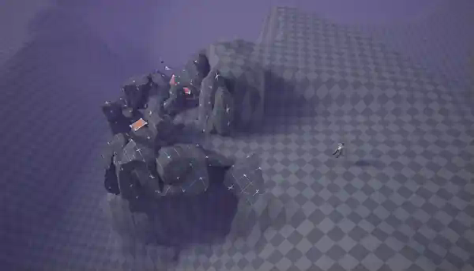
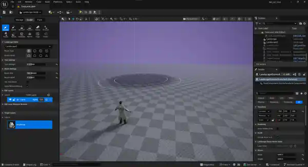
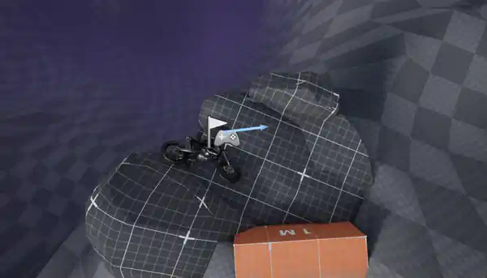
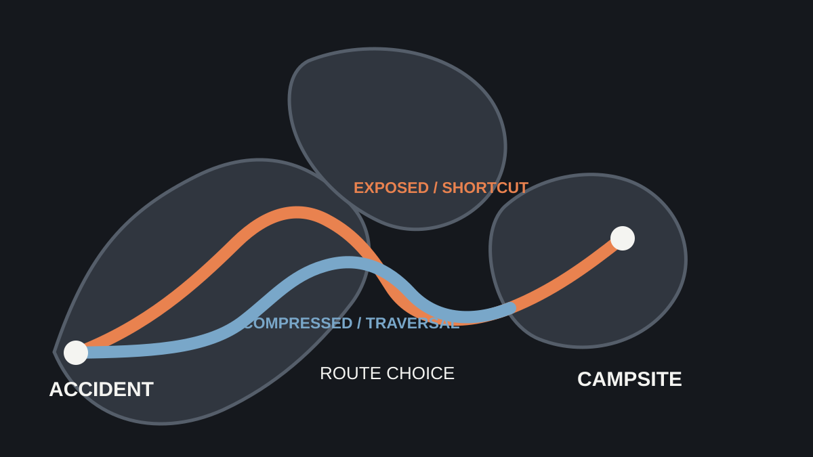
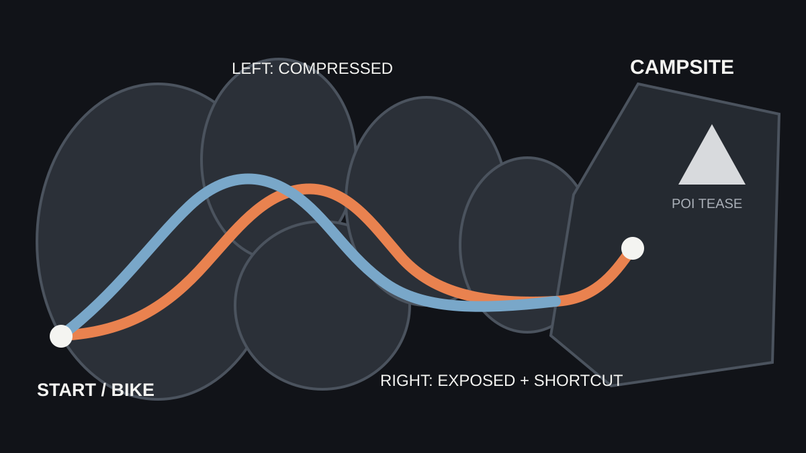

Opening accident / early routeThe starting pocket establishes the bike crash, player scale, and the first readable movement out of the constrained space.

A first-day Unreal blockout focused on compression and release, route choice, readable traversal, and a transition from exposed natural space toward a human campsite.
The blockout moves from scale validation to a playable traversal sequence: an accident opener, two distinct route options, and a controlled release toward the campsite.



Short captured passes show how the level changed as route width, traversal choice, sightlines, and the transition toward the campsite were refined.
The split stays compact: two routes create different moment-to-moment experiences, then reconnect before the campsite so the level retains forward momentum.

The right route favors exposure and a readable shortcut. The left route favors tighter traversal and elevation changes. Both resolve into a broad reorientation space where the distant destination can be teased, occluded, and revealed again.
An angled overview keeps the complete Day 1 playable footprint visible, including the dense rock traversal on the left and the expanding campsite shelf on the right.
The dense traversal cluster occupies a deliberately small footprint before opening into a much broader campsite area. The contrast provides a strong pacing change while preserving terrain boundaries for later POI occlusion.
Each iteration targets a specific player-experience problem rather than adding detail for its own sake.
Terrain height and rock walls regulate when the distant destination becomes visible instead of leaving it permanently exposed.
The two paths are not mirrored alternatives: one emphasizes exposure and speed, while the other emphasizes compression and traversal.
The campsite approach pays off the dense rocks with a wider space that supports scanning, reorientation, and environmental storytelling.
Stylized rock silhouettes provide natural forms without turning the blockout into an environment-art exercise.